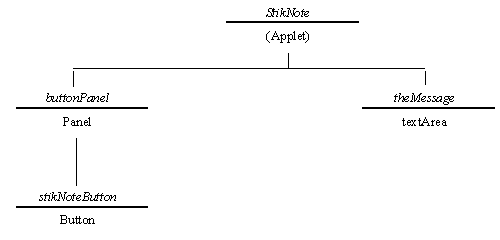

The StikNoteWindow class provides the main window, shown in Figure 3.1 as the window containing the "Stik Note" button. The instance hierarchy for the StikNoteWindow is shown in Figure 3.4.

Figure 3.4 The StikNoteWindow instance hierarchy.
Figure 3.2 shows that the main window interface is constructed within the Applet's window and consists of a TextArea instance, called theMessage, with a Button instance, called stikNoteButton, mounted on its own Panel, called buttonPanel beneath it. The buttonPanel is required in order that the stikNoteButton can present itself centered within the width of the Applet's window. If the panel were not used then the Button would be stretched to fill the entire width of the window. This hierarchy is created in the StikNoteWindow constructor whose implementation is as follows.
0001 // Filename StikNoteWindow.java.
0002 // Provides StikNote application main window whose events
0003 // are listened to by the StikNote translation application.
0004 //
0005 // Written for the JI book, Chapter 3.
0006 // Fintan Culwin, v 0.2, August 1997.
0007
0008 package StikNote;
0009
0010 import java.awt.*;
0011 import java.awt.event.*;
0012 import java.applet.*;
0013
0014
0015 class StikNoteWindow extends Object {
0016
0017 private TextArea theMessage;
0018
0019
0020 protected StikNoteWindow( StikNote itsApplet) {
0021
0022 Panel buttonPanel = new Panel();
0023 Button stikNoteButton = new Button( "Post It");
0024
0025 theMessage = new TextArea( 10, 20);
0026
0027 stikNoteButton .addActionListener( itsApplet);
0028 buttonPanel.add( stikNoteButton );
0029
0030 itsApplet.setLayout( new BorderLayout());
0031 itsApplet.add( theMessage, "Center");
0032 itsApplet.add( buttonPanel, "South");
0033 } // End StikNoteWindow constructor.
The constructor, commencing on line 0020, is declared with the visibility modifier protected which ensures that it can only be called from classes which are contained within the same package. Line 0008 has already declared this class to be part of the StikNote package and line 0015 does not declare it as a public class, restricting its visibility to other classes within the same package.
The constructor takes a StikNote argument which, as shown on the instance diagram, extends the Applet class and implements the ActionListener interface. The constructor will install the StickNote main window interface into the Applet window of this argument and will dispatch events from the Stick Note button to it. On lines 0022 and 0023 the buttonPanel and stickNotetButton from Figure 3.4, are created, following which the theMessage TextArea, declared as an instance attribute on line 0017, is constructed with 10 row by 20 column input area. Before the interface is assembled, on line 0027, the ActionListener attribute of the stickNotetButton is registered as the itsApplet argument, ensuring that events generated when it is pressed are dispatched to it.
The constructor concludes, on lines 0028 to 0032, by assembling the components to produce the interface as illustrated in Figure 3.1, using the instance hierarchy shown in Figure 3.4. The stickNotetButton is added to the buttonPanel which in turn is added to the "South" location of the Applet's window which has already had a BorderLayout policy established. (The BorderLayout policy was described in section 10 of Chapter 2.) The theMessage TextArea is added above the buttonPanel into the Applet window's "Center" location. When the interface is assembled within an Applet Panel it will automatically become visible to the user as the application commences.
This interface will allow the user to enter, and edit, text within its TextArea component and, when its "Stik Note" button is pressed, will send an ActionEvent to its registered listener. It supplies two other protected methods, as follows, which its listener can make use of; one to obtain the contents of its TextArea and one to clear its contents.
0036 protected String getMessage() {
0037 return theMessage.getText().trim();
0038 } // End getMessage.
0039
0040 protected void clearMessage() {
0041 theMessage.setText( "");
0042 } // End clearMessage.
0043 } // End class StikNoteWindow.
Both of these methods manipulate the text attribute of the theMessage TextArea. The getMessage() method retrieves the text as a String, and then uses the String trim() method to remove any white space at the start and end of the text. So; if the user has only pressed the space bar, and not typed in any characters, this will cause the getMessage() method to return an empty String. The clearMessage() method removes any existing text from theMessage by using its setText() action, passing as an argument an empty String.